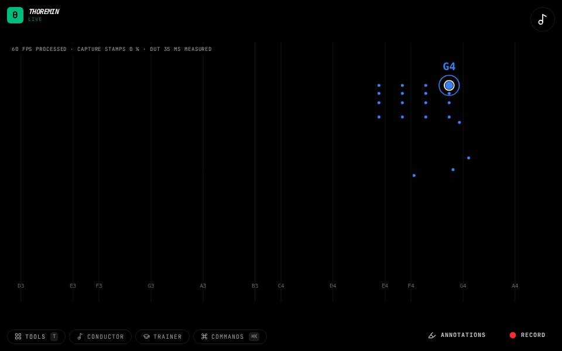

Instruments › Field instruments
Bell & Strings

What to do
- Raise both hands.
- One hand rings like a bell, the other bows like strings.
- Let the bells ring over a held string note.
A bell in one hand and strings in the other.
How it works
The same two-voice setup as Split Voices, with a bell sound for one hand and a strings sound for the other.
Its settings: Sound. Every knob: the manual.